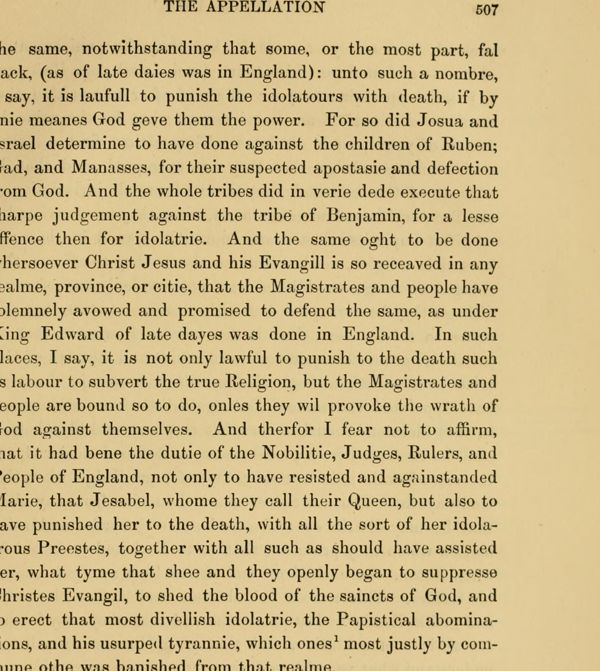

“Marie, that Jesabel, whome they call their Queen” (p. 507)
English: Laing’s edition, vol. IV, p. 507, scan. Original spelling. Highlighted: Lecky’s quotation.

… unto such a nombre, I say, it is laufull to punish the idolatours with death, if by anie meanes God geve them the power. For so did Josua and Israel determine to have done against the children of Ruben, Gad, and Manasses, for their suspected apostasie and defection from God. And the whole tribes did in verie dede execute that sharpe judgement against the tribe of Benjamin, for a lesse offence then for idolatrie. And the same oght to be done whersoever Christ Jesus and his Evangill is so receaved in any realme, province, or citie, that the Magistrates and people have solemnely avowed and promised to defend the same, as under King Edward of late dayes was done in England. In such places, I say, it is not only lawful to punish to the death such as labour to subvert the true Religion, but the Magistrates and people are bound so to do, onles they wil provoke the wrath of God against themselves. And therfor I fear not to affirm, that it had bene the dutie of the Nobilitie, Judges, Rulers, and People of England, not only to have resisted and againstanded Marie, that Jesabel, whome they call their Queen, but also to have punished her to the death, with all the sort of her idolatrous Preestes, together with all such as should have assisted her, what tyme that shee and they openly began to suppresse Christes Evangil, to shed the blood of the saincts of God, and to erect that most divellish idolatrie, the Papistical abominations, and his usurped tyrannie, which ones most justly by commune othe was banished from that realme.
But becaus I can not at this present discusse this argument, as it appertaineth, I am compelled to omitt it to better opportunitie …
Lecky ends at “abominations”, leaving out “and his usurped tyrannie”, that is, the Pope’s; his “devillish” is Laing’s “divellish”.
Backlinks
Every place in Rationalism in Europe that links to this page (generated automatically when the site is built).
- Chapter V: note 82